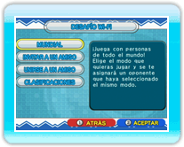

16 |
Desafío Wi-Fi (Dr. Mario) |
 |
|

En Dr. Mario, puedes jugar con gente de todo el mundo mediante la Conexión Wi-Fi de Nintendo. Para empezar una partida, selecciona CWF DE NINTENDO en la pantalla de selección del modo y, a continuación, DESAFÍO Wi-Fi. Se necesita un encaminador inalámbrico compatible o un Conector USB Wi-Fi de Nintendo y
una conexión de banda ancha a internet para jugar en línea. Para más información, visita Nintendo.com.
Nota: No podrás utilizar el Botón RESET de la consola Wii mientras estás conectado a la Conexión
Nota: Deberás tener al menos una clave de amigo registrada en la lista de amigos para poder seleccionar INVITAR A UN AMIGO o UNIRSE A UN AMIGO. Para registrar claves de amigo, selecciona AJUSTES DE AMIGOS en el menú de la CWF de Nintendo. |
 |
 |
 |